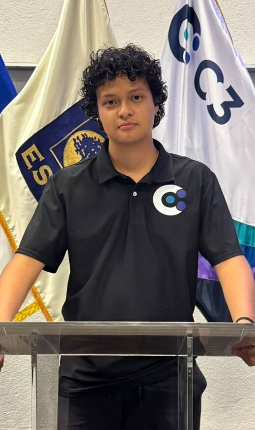
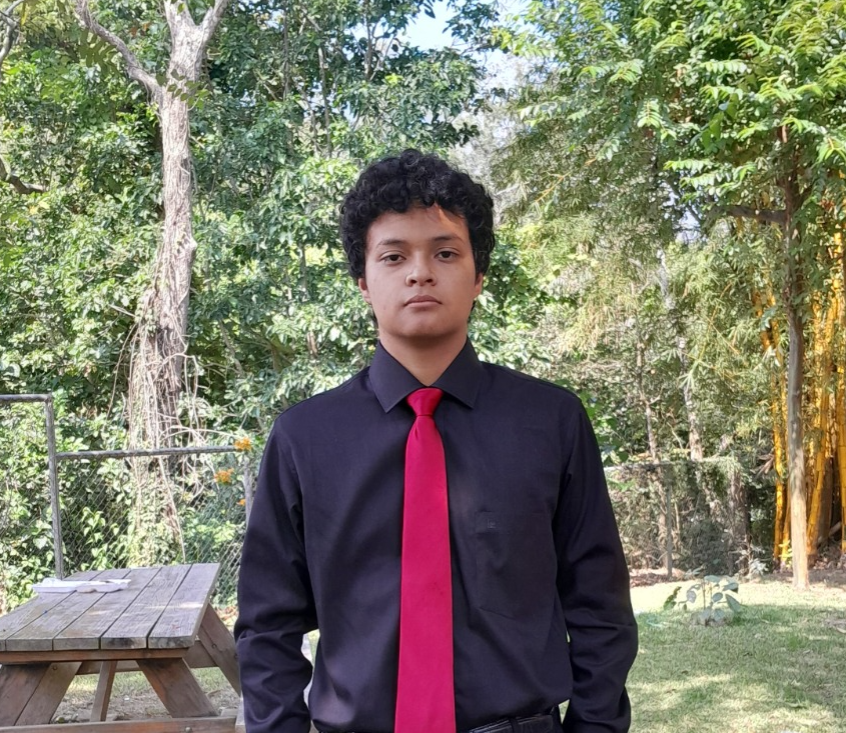

Historia
Mi nombre es Rodrigo López. Nací en Santiago Texacuangos, San Salvador. Desde pequeño he tenido interés por la tecnología, los videojuegos y el aprendizaje de cosas nuevas.
Actualmente estudio Ingeniería de Software y Negocios Digitales en la Escuela Superior de Economía y Negocios (ESEN), donde he tenido la oportunidad de aprender sobre programación, bases de datos, desarrollo web, estructuras de datos y metodologías ágiles.
Gracias a la ESEN he conocido a personas increíbles, desde profesor que son muy buenos enseñandos hasta amistades que espero sean de toda la vida. No solo eso, conocí a una persona que se ha convertido en alguien muy especial para mi y con la cual tengo una relación de noviazgo,
Actualmente soy miembro del C3, una organización estudiantil que me ha abierto muchas puertas. Estoy muy feliz de ser parte del C3 porque me ha permitido tener increíbles experiencias.


Biografía
Estudios
Soy estudiante de Ingeniería de Software y Negocios Digitales en ESEN. Me interesa especialmente el desarrollo de software, las bases de datos, el desarrollo web y la ciberseguridad.

Intereses
Entre mis principales intereses se encuentran la programación, los videojuegos, la tecnología, el ajedrez y estoy interesado en aprender nuevo idiomas.

Experiencias
He trabajado en proyectos utilizando tecnologías como C#, Python, SQL, HTML, CSS, JavaScript y Unity. También he participado en actividades relacionadas con programación competitiva y hackathons.

Datos curiosos
Ajedrez
Aprendí ajedrez con mi papá a los 6 años.
Videojuegos
Me gustan videojuegos como Horizon Zero Dawn, The Binding of Isaac y Bloons TD6.
Música
Me gusta la música pop.
Athos
Tengo un perro llamado Athos.
Hackathon
Mi primera Hackathon fue EntropyHack, organizada por Key Institute.
Software
Uno de mis principales intereses es el desarrollo de software.